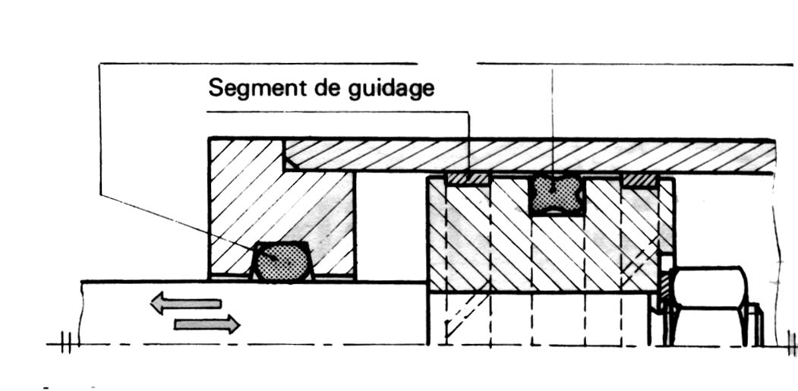
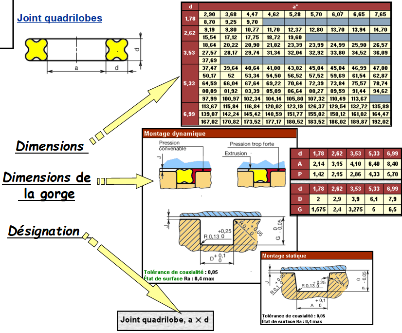
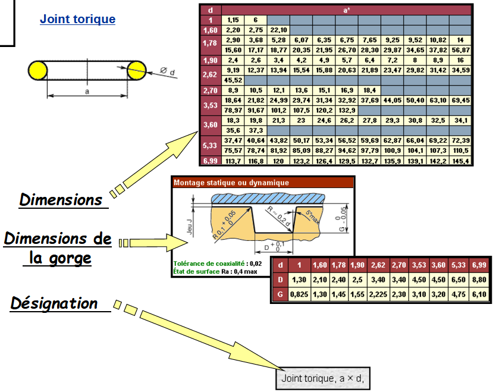
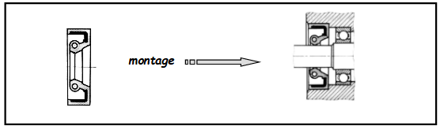
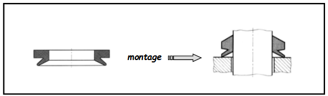
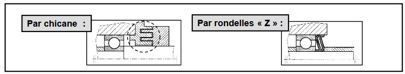
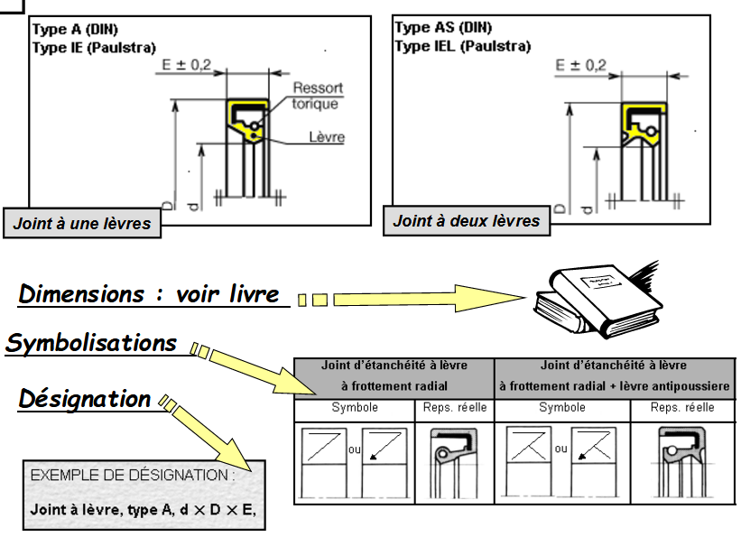
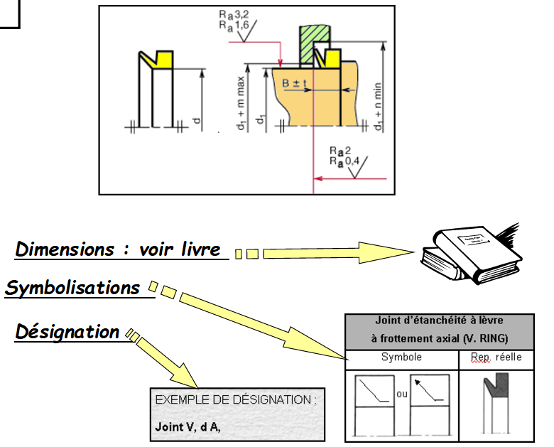

Cas d’une translation
Dans ce cas, on utilise des joints toriques ou de section sensiblement carrée :
Exemple du vérin:



Cas d’une rotation:
On peut utiliser un joint torique lorsque la vitesse de rotation reste faible.
Lorsque la vitesse de rotation est importante, on utilise un joint à lèvre :
- Joint à lèvre à frottement radial : (⇒lien vers doc)

- Joint à lèvre à frottement axial (Joint V. RING) : (⇒lien vers doc)

- Étanchéité sans frottement :
On peut également, dans certain cas, prévoir une étanchéité sans frottement avec les pièces, exemples :


